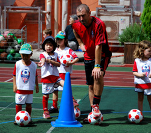
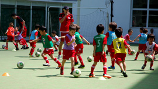

ブリティシュ・フットボール・アカデミー・ (ＢＦＡ)は、生徒達にユニークな教育を提供し、
急成長しているサッカースクールです。
ＢＦＡは生徒の教育を重視しており、将来の糧となるべく、形成していくものだと考えています。多国籍の子供達とふれあう異文化教育、子供の成長過程において国際的な視野を広げられる環境の下で指導しています。そして、子供のときから国際的な影響を受けることは、将来かけがえのない財産になると考えます。
私達は英国スタイルのサッカー教育を目的とし、サッカーの技術の習得とともに英会話も身につけることが出来る環境を提供します。ＢＦＡでは国籍、男女問わず3歳から１5歳のプレーヤーを対象にカリキュラムを組んでおり、英語やサッカーの技術の能力制限はなく幅広く受け入れを行っています。ＢＦＡは、経験豊富なヘッドコーチと、英語教師としての経験が豊富で、イングランドサッカー協会（Football Association）のコーチングトレーニングを受けた英国人のコーチングスタッフがセッションを行います。

インターナショナルな環境で、楽しく、安全なサッカーを通した子供の発達、“トータルエデュケーション”を目指しています。
サッカーを始めるのに早すぎることはありません。ＢＦＡスタッフは、サッカーの魅力を次世代の“デイビッド・ベッカム”に伝えていくことに全力を投じています。
幼い時からサッカーの基礎を固めることが上達の鍵です。楽しく、サッカーを面白いと思いながら技術を身に付けて頂くために、ＢＦＡは能力と経験に合わせた次のクラス構成をとっています：
Pups：パップス （3歳から4歳）
British Bulldogs：ブリティッシュ・ブルドッグ（5歳から６歳）
British Lions：ブリティッシュ・ライオン（７歳から8歳）
The Academy：アカデミー(9歳から１0歳)
The Academy Stars：アカデミースターズ（11歳から12歳）
Under 15's：U15クラス（13歳から15歳）
＊対象年齢はあくまでも基準です。クラス分けは能力・経験から判断します。
|